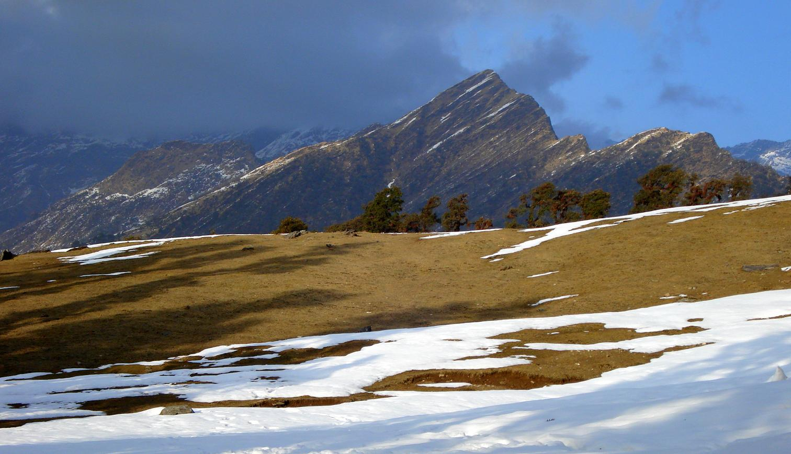

Pachmarhi, known as the "Queen of Satpura" (Satpura ki Rani), is the only hill station in Madhya Pradesh. Nestled in the Satpura Range at an altitude of 1,100 metres, it is a UNESCO Biosphere Reserve celebrated for its ancient caves, dramatic waterfalls, and lush greenery.
Back to Destinations